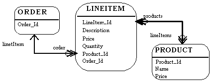
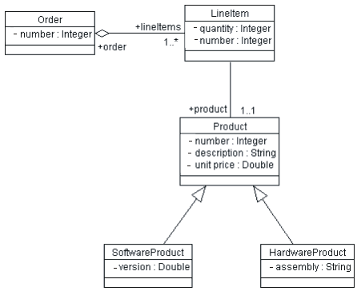
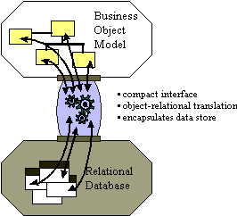
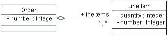

Artifacts >
Artifacts >
 Analysis & Design Artifact Set >
Analysis & Design Artifact Set >
 Data Model >
Data Model >
 Guidelines >
Data Model
Guidelines >
Data Model
Artifacts >
Analysis & Design Artifact Set >
Data Model >
Guidelines >
Data Model
Guidelines:
|
|
|
The data model is a subset of the implementation model which describes the logical and physical representation of persistent data in the system. |
Relational databases and object orientation are not entirely compatible. They represent two different views of the world: in an RDBMS, all you see is data; in an Object-Oriented system, all you see is behavior. It is not that one perspective is better than the other: the Object-Oriented model tends to work well for systems with complex behavior and state-specific behavior in which data is secondary, or systems in which data is accessed navigationally in a natural hierarchy (for example, bills of materials). The RDBMS model is well-suited to reporting applications and systems in which the relationships are dynamic or ad-hoc.
The real fact of the matter is that a lot of information is stored in relational databases, and if Object-Oriented applications want access to that data, they need to be able to read and write to an RDBMS. In addition, Object-Oriented systems often need to share data with non-Object-Oriented systems. It is natural, therefore, to use an RDBMS as the sharing mechanism.
While object-oriented and relational design share some common characteristics (an objects attributes are conceptually similar to an entities columns), fundamental differences make seamless integration a challenge. The fundamental difference is that data models expose data (through column values) while object models hide data (encapsulating it behind its public interfaces).
The relational model is composed of entities and relations. An entity may be a physical table or a logical projection of several tables also known as a view. The figure below illustrates LINEITEM and PRODUCT tables and the various relationships between them. A relational model has the following elements:

A Relational Model
An entity has columns. Each column is identified by a name and a type. In the figure above, the LINEITEM entity has the columns LineItem_Id (the primary key), Description, Price, Quantity, Product_Id and Order_Id (the latter two are foreign keys that link the LINEITEM entity to the ORDER and PRODUCT entities).
An entity has records or rows. Each row represents a unique set of information which typically represents an object's persistent data.
Each entity has one or more primary keys. The primary keys uniquely identifies each record (for example, Id is the primary key for LINEITEM table).
Support for relations is vendor specific. The example illustrates the logical model and the relation between the PRODUCT and LINEITEM tables. In the physical model relations are typically implemented using foreign key / primary key references. If one entity relates to another, it will contain columns which are foreign keys. Foreign key columns contain data which can relate specific records in the entity to the related entity.
Relations have multiplicity (also known as cardinality). Common cardinalities are one to one (1:1), one to many (1:m), many to one (m:1), and many to many (m:n). In the example, LINEITEM has a 1:1 relationship with PRODUCT and PRODUCT has a 0:m relationship with LINEITEM.
An object model contains, among other things, classes (see [UML99] for a complete definition of an object model). Classes define the structure and behavior of a set of objects, sometimes called objects instances. The structure is represented as attributes (data values) and associations (relationships between classes). The following figure illustrates a simple class diagram, showing only attributes (data) of the classes.

An Object Model (Class Diagram)
An Order has a number (the Order Number), and an association to 1 or more (1..*) Line Items. Each Line Item has a quantity (the quantity ordered).
The object model supports inheritance. A class can inherit data and behavior from another class (for example, SoftwareProduct and HardwareProduct products inherit attributes and methods from Product class).
The majority of business applications utilize relational technology as a physical data store. The challenge facing object-oriented applications developers is to sufficiently separate and encapsulate the relational database so that changes in the data model do not "break" the object model, and vice versa. Many solutions exist which let applications directly access relational data; the challenge is in achieving a seamless integration between the object model and the data model.
Database APIs come in standard flavors (for example, Microsoft's Open Data Base Connectivity API, or ODBC) and are proprietary (native bindings to specific databases). The APIs provide data manipulation language (DML) pass through services which allow applications to access raw relational data. In object-oriented applications, the data must undergo object-relational translation prior to being used by the application. This requires considerable amount of application code to translate raw database API results into application objects. The purpose of the object-relational framework is to generically encapsulate the physical data store and to provide appropriate object translation services.

The Purpose of a Persistence Framework
Application developers spend over 30% of their time implementing relational database access in object-oriented applications. If the object-relational interface is not correctly implemented, the investment is lost. Implementing an object-relational framework captures this investment. The object-relational framework can be reused in subsequent applications reducing the object-relational implementation cost to less than 10% of the total implementation costs. The most important cost to consider when implementing any system is maintenance. Over 60% percent of the total costs of a system over its entire life-cycle can be attributed to maintenance. A poorly implemented object relational system is both a technical and financial maintenance nightmare.
Common patterns are emerging for object-relational applications. IT
professionals who have repeatedly crossed the chasm are beginning to understand
and recognize certain structures and behaviors which successful
object-relational applications exhibit. These structures and behaviors have been
formalized by the high-level CORBA Services specifications (which apply equally
well to COM/DCOM-based systems as well).
The CORBA service specifications which are applicable and useful to consider for
object-relational mapping are:
The following sections will use these categories to structure a discussion of common object-relational services. The reader is encouraged to reference the appropriate CORBA specifications for further details.
Persistence is a term used to describe how objects utilize a secondary storage medium to maintain their state across discrete sessions. Persistence provides the ability for a user to save objects in one session and access them in a later session. When they are subsequently accessed, their state (for example, attributes) will be exactly the same as it was the previous session. In multi-user systems, this may not be the case since other users may access and modify the same objects. Persistence is interrelated with other services discussed in this section. The consideration of relationship, concurrency and others is intentional (and consistent with CORBA's decomposition of the services).
Examples of specific services provided by persistence are:
Persistent object storage is of little use without a mechanism to search for and retrieve specific objects. Query facilities allow applications to interrogate and retrieve objects based on a variety of criteria. The basic query operations provided by an object-relational mapping framework are find and find unique. The find unique operation will retrieve a specific object and find will return a collection of objects based on a query criteria.
Data store query facilities vary significantly. Simple file-based data stores may implement rigid home-grown query operations, while relational systems provide a flexible data manipulation language. Object-relational mapping frameworks extend the relational query model to make it object-centric rather than data centric. Pass-through mechanisms are also implemented to leverage relational query flexibility and vendor-specific extensions (for example, stored-procedures).
Note that there is some potential conflict between database-based query mechanisms and the object paradigm: database query mechanisms are driven by values of attributes (columns) in a table. In the corresponding objects, the principle of encapsulation prevents us from seeing the values of attributes; they are encapsulated by the operations of the class. The reason for encapsulation is that it makes applications easier to change: we can alter the internal structure of a class without concern for dependent classes as long as the publicly-visible operations of the class do not change. A query mechanism based on the database is dependent on the internal representation of a class, effectively breaking encapsulation. The challenge for the framework is to prevent queries from making applications brittle to change.
Transactional support enables the application developer to define an atomic unit of work. In database terminology, it means that the system must be able to apply a set of changes to the database, or it must ensure that none of the changes are applied. The operations within a transaction either all execute successfully or the transaction fails as whole. Object-relational frameworks at a minimum should provide a relational database-like commit/rollback transaction facility. Designing object-relational frameworks in a multi-user environment can present many challenges and careful thought should be given to it.
In addition to the facilities provided by the persistence framework, the application must understand how to handle errors. When a transaction fails or is aborted, the system must be able to restore its state to a stable prior state, usually by reading the prior state information from the database. Thus, there is a close interaction between the persistence framework and the error handling framework.
Multi-user object-oriented systems must control concurrent access to objects. When an object is accessed simultaneously by many users, the system must provide a mechanism to insure modifications to the object in the persistent store occur in a predictable and controlled manner. Object-relational frameworks may implement pessimistic and/or optimistic concurrency controls.
All applications using shared data must use the same concurrency strategy; you cannot mix optimistic and pessimistic concurrency control in the same shared data or corruption may occur. The need for a consistent concurrency strategy is best handled through a persistence framework.
Objects have relationships to other objects. An Order object has many Line
Item objects. A Book object has many Chapter objects. An Employee object belongs
to exactly one Company object. In relational systems, relations between entities
are implemented using foreign key / primary key references. In object-oriented
systems relations are usually explicitly implemented through attributes. If an
Order object has LineItem's, then Order will contain an attribute named
lineItems. The lineItems attribute of Order will contain many LineItem objects.
The relationship aspects of an object-relational framework are interdependent
with the persistence, transaction, and query services. When an object is stored,
retrieved, transacted, or queried consideration must be given to its related
objects:
While it is conceptually advantageous to consider common object-relational services separately, their object-relational framework implementations will be codependent. The services must be implemented consistently across not only individual organizations, but all applications which share the same data. A framework is the only economical way to achieve this.
The persistent classes in the Design Model represent the information the system must store. Conceptually, these classes may resemble a relational design (for example, the classes in the design model may be reflected in some fashion as entities in the relational schema). As we move from elaboration into construction, however, the goals of the Design Model and the Relational Data Model diverge. This divergence is caused because the objective of relational database development is to normalize data whereas the goal of The Design Model is to encapsulate increasingly complex behavior. The divergence of these two perspectives - data and behavior - leads to the need for mapping between related elements in the two models.
In a relational database written in third normal form, every row in the tables – every "tuple" – is regarded as an object. A column in a table is equivalent to a persistent attribute of a class (keep in mind that a persistent class may have transient attributes). So, in the simple case where we have no associations to other classes, the mapping between the two worlds is simple. The data type of the attribute corresponds to one of the allowable data types for columns.
Example
The class Customer:

when modeled in the RDBMS would translate to a table called Customer, with the columns Name, Address and Customer_ID.
We can visualize an instance of this table as:

For each persistent attribute, additional information is required to appropriately model the persistent object in a relational data model:
Rows in tables need to have unique identity; they are uniquely identified by their primary key values. The primary key will be used as a reference to a tuple in this table from other tables, and it will uniquely identify the row/object for searches. As a result, it must never change. Names in plain text are not suitable; people change their names, and names are not unique. Because numeric comparisons are less resource-consumptive than string comparisons, primary keys should be numeric, and preferably system-assigned so that they do not change.
Generally, primary keys are indexed for performance. This, however, is an implementation decision and is independent of the object to table mapping.
Associations between two persistent objects are realized as foreign keys to the associated objects. A foreign key is a column in one table which contains the primary key value of associated object.
Example
Assume we have the following association between Order and Customer:

When we map this into relational tables, we get an Order table and a Customer table. The Order table will have columns for attributes listed, plus an additional column Customer_ID which contains foreign-key references to the primary key of associated rows in the Customer table; for a given Order, the Customer_ID column will contain the identifier of the Customer to whom the Order is associated. Foreign keys allow the RDBMS to join related information together.
Note: the customerID attribute of the Customer class is a String; for optimal performance, it is best to convert this to a Number in the database schema (queries and joins work faster on numbers than strings, since number comparisons are faster in general than string comparisons).
Aggregation is also modeled using foreign key relationships.
Example
Assume we have the following association between Order and LineItem:

When we map this into relational tables, we get an Order table and a Line_Item table. The Line_Item table will have columns for attributes listed, plus an additional column Order_ID which contains foreign-key references to associated rows in the Order table. For a given Line Item, the Order_ID column will contain the Order_ID of the Order that the Line Item is associated with. Foreign keys allow the RDBMS to join related information together.
In addition, to provide referential integrity in the data model, we would also want to implement a cascading delete constraint, so that whenever the Order is deleted, all of their Line Items are deleted as well.
Note that in the object model, a customer knows about its purchase orders; in the relational data model, a purchase order knows about its customers. This is a feature of the way relationships are represented in a relational data model.
The standard relational data model does not support modeling inheritance in a direct way. There are a number of strategies which can be used to model inheritance. These are summarized as follows:
A standard technique in relational modeling is to use an intersection entity to represent many-to-many associations. The same approach should be used here: an intersection table should be used to represent the association.
Example
If Suppliers can supply many Products, and a Product can be supplied by many Suppliers, the solution is to create a Supplier/Product table. This table would only contain the primary keys of the Supplier and Product tables, and serves to link the Suppliers and their related Products. There is no analog for this table in the object model; it is strictly used to represent the associations in the relational data model.
In the object model, referential integrity is not an issue; objects refer to each other directly. In the relational data model, rows refer to other rows by their primary key values. Referential integrity rules are needed to ensure that foreign key references remain valid. Typically, these rules are implemented as integrity constraints, or in some cases as triggers. The RDBMS reference manuals can provide more direction on the appropriate implementation technique.
The goal of elaboration is to eliminate technical risk and to produce a stable (baselined) architecture. In a large class of business systems, poor performance resulting from a poorly designed data model is a major architectural concern. As a result, both data modeling and developing an architectural prototype that allows the performance of the database to be evaluated is essential to achieving a stable architecture.
The major database structures (tables, indexes, primary and foreign key columns) should be put in place to support the architecturally significant scenarios. In addition, representative data volumes should be loaded into the databases to support architectural performance testing. Based on the results of performance testing, the data model may need to be optimized, including but not limited to de-normalization, optimizing physical storage attributes or distribution, or indexing.
In the construction phase, additional columns may be added to tables, views may be created to support query and reporting requirements, and indexes may be created to optimize performance, but major restructuring of tables should not occur (this would be a sign that the architecture was not stabilized and that the start of the construction phase was premature).
|
Rational Unified
Process
|